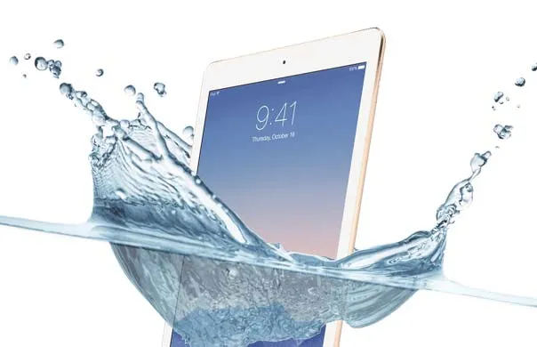

Step-by-Step Guide to Drying a Wet iPad Pro and Keeping It in Top Condition
If you've just invested in a brand-new iPad Pro, congratulations! Owning this cutting-edge tablet is something special. But with ownership comes responsibility. This Apple product demands meticulous care and attention. However, accidents can happen, and you might find yourself in a situation where your iPad Pro has gotten wet, such as dropping it at the beach. But don't worry, we've got you covered. Below, you'll find a step-by-step guide on how to dry a wet iPad Pro.

Steps to Dry a Wet iPad Pro
Discovering your iPad Pro soaked can be alarming, but there's no need to panic. Follow these steps to dry your device safely:
- Turn off the device immediately: To prevent further damage, make sure to switch it off right away. Avoid charging or connecting it to other devices.
- Dry the exterior with a soft cloth: Utilize a gentle microfiber cloth to carefully wipe the outside of your iPad Pro, removing any visible moisture. If applicable, take out the SIM card and lay it on a soft cloth to dry.
- Use silica gel packets: These packets can absorb moisture efficiently. Place your iPad Pro in a paper bag with a few silica gel packets, seal the bag, and leave it for 48 hours. Once done, reinstall the SIM card and try powering on the device.
Additional Tips for Maintenance
Your iPad Pro deserves top-notch care. Consider these additional tips to keep it in perfect condition:
- Clean your iPad carefully: When cleaning the device, be mindful of the products you use. For an eco-friendly approach, white vinegar works great for the touchscreen. Compressed air cans are perfect for cleaning the ports.
- Use a microfiber cloth: Always opt for a soft microfiber cloth for cleaning, as it won't scratch the surface. Remember to turn off the device and don't press too hard while wiping the screen.
- Invest in a screen protector: To safeguard against scratches, consider purchasing an iPad screen protector. Apply it with care or seek professional help if needed.
Your iPad Pro is a significant investment, and it deserves the best care possible. By following the drying procedure and ongoing maintenance tips above, you'll ensure that your device not only lasts longer but continues to perform at its best. Happy iPad-ing!